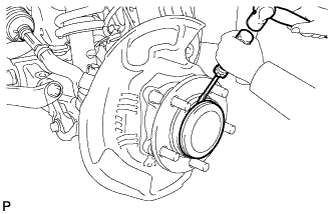
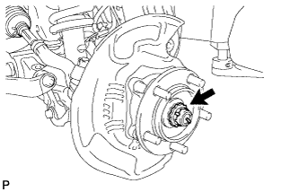
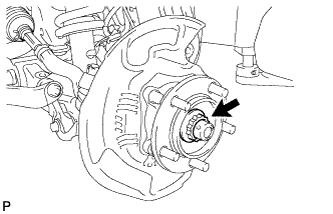
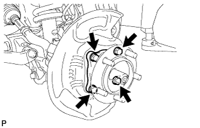
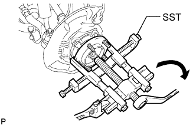

FRONT AXLE HUB > REMOVAL |
| 1. REMOVE STABILIZER CONTROL VALVE PROTECTOR (w/ KDSS) |
 |
Detach the clamp, and disconnect the connector from the protector.
Remove the 3 bolts and protector.
| 2. OPEN STABILIZER CONTROL WITH ACCUMULATOR HOUSING SHUTTER VALVE (w/ KDSS) |
Using a 5 mm hexagon socket wrench, loosen the lower and upper chamber shutter valves of the stabilizer control with accumulator housing 2.0 to 3.5 turns.

| 3. REMOVE FRONT WHEEL |
| 4. DISCONNECT FRONT DISC BRAKE CALIPER ASSEMBLY LH |
 |
Remove the bolt and nut, and disconnect the brake tube bracket from the steering knuckle.
 |
Remove the 2 bolts and disconnect the disc brake caliper from the steering knuckle.
| 5. REMOVE FRONT DISC |
| 6. REMOVE FRONT AXLE HUB GREASE CAP LH |
 |
Using a screwdriver and hammer, remove the axle hub grease cap.
| 7. REMOVE FRONT AXLE SHAFT NUT LH |
 |
Remove the cotter pin and adjusting lock cap.
 |
Using a 39 mm socket wrench, remove the axle hub nut.
| 8. REMOVE FRONT AXLE HUB SUB-ASSEMBLY LH |
 |
Remove the 4 bolts.
 |
Using SST, remove the front axle hub together with the dust cover.
Remove the O-ring.